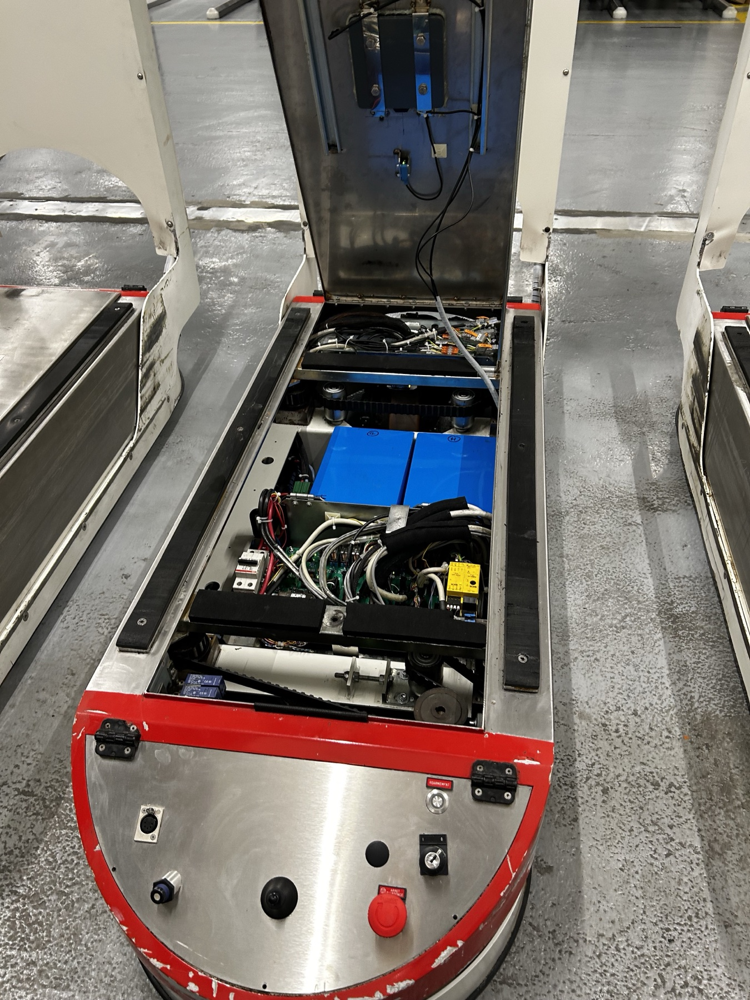

Formation
Admis · Pôle Formation UIMM, Beauzelle
Technicien de maintenance · Systèmes automatisés
Je garde les machines automatisées en marche. Agent logistique au CH de Rodez, je supervise 6 AGV Swisslog et je remets en service les pannes de 1er niveau.
Le projet

Je suis admis au Pôle Formation UIMM Occitanie, à Beauzelle, pour préparer un BTS Maintenance des Systèmes en alternance. Il me manque l'essentiel : l'entreprise d'accueil. Je m'installe à Blagnac à la rentrée 2026, et je cherche un site industriel prêt à former quelqu'un de fiable, méthodique, déjà à l'aise sur des systèmes automatisés.

Terrain · CH Rodez
La flotte Swisslog approvisionne tout l'hôpital — repas, linge, déchets. Mon rôle : qu'elle ne s'arrête jamais.
La pratique

01 — Diagnostic à distance. J'identifie l'AGV, le type d'incident et sa localisation depuis le poste de supervision. La plupart se résolvent sans déplacement.

02 — Intervention sur site. Si besoin, je me déplace avec le contrôleur MCD8 pour le diagnostic physique et la remise en service.
Méthode
Quatre temps structurent chaque intervention. C'est la logique qui fiabilise le flux — et celle que j'applique au quotidien.
Depuis le poste de supervision, j'identifie l'AGV concerné, le type d'incident et sa localisation.
Prise d'embase, capteurs, détection défaillante : j'analyse à l'aide de la documentation technique (manuel LAMCAR-R).
Je traite les pannes de 1er niveau en autonomie, ou je passe le relais au technicien de maintenance.
Chaque incident est consigné sur la main courante, dans une logique GMAO. L'équipe suivante reprend sur une base claire.

Le matériel
Châssis, mât, table de levage, scrutateurs laser, batteries, moteur de levage. Je m'appuie sur le manuel LAMCAR-R pour comprendre avant d'intervenir.
Parcours
Supervision de 6 AGV Swisslog (repas, linge, déchets), 2 à 4 interventions / jour. Diagnostic et remise en service des pannes de 1er niveau (prise d'embase, capteurs, détection défaillante). Traçabilité sur main courante, coordination avec l'équipe maintenance.
Protocoles d'hygiène et de sécurité stricts, bio-nettoyage de 8 chambres / jour, gestion des flux et du linge.
Relevés terrain, métrés et chiffrage, appui aux études de prix et à la planification.
SolidWorks, analyse fonctionnelle, Arduino, impression 3D, lecture de plans, RDM, métrés. Une base technique solide, prête pour la maintenance des systèmes.
Compétences
Contact
Je recherche une alternance en maintenance industrielle, production ou systèmes automatisés pour la rentrée 2026. Installation à Blagnac, mobile et véhiculé.